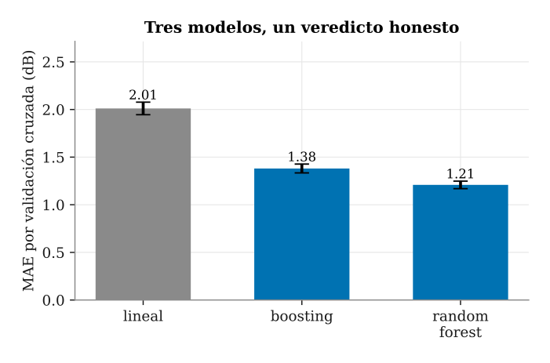
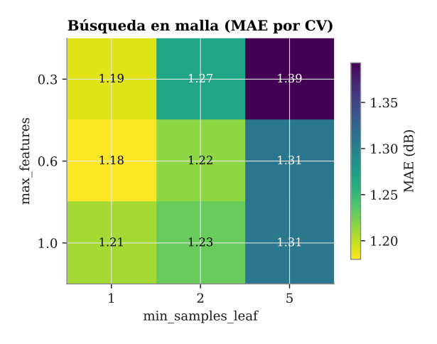
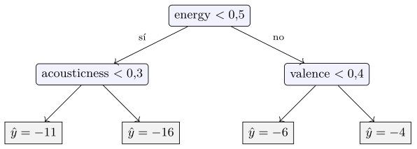
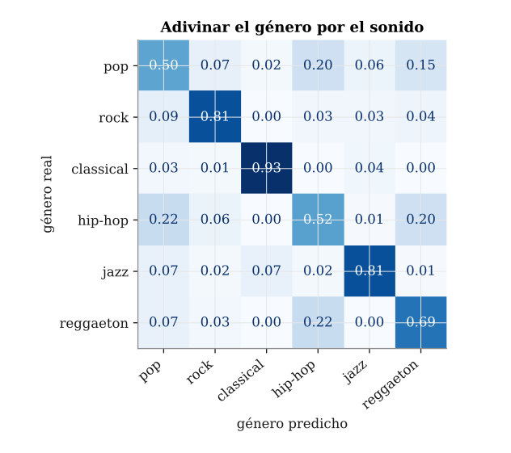
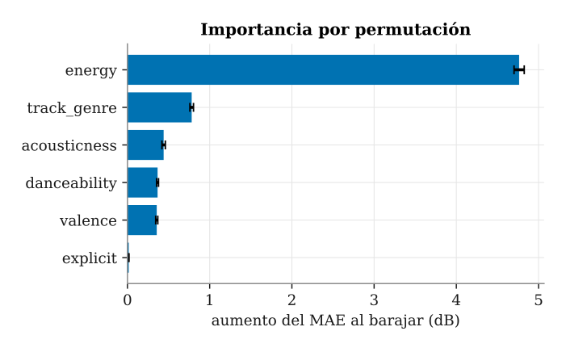
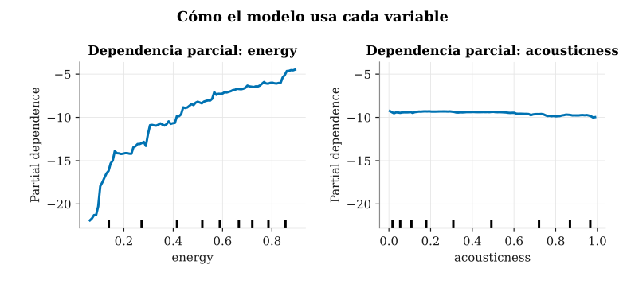

Capítulo 14. scikit-learn y el aprendizaje moderno
▶ Ejecutar este capítulo en Binder
La primera vez que se abre, Binder construye el entorno en la nube (unos 10-20 min); verás una pantalla de progreso. Después queda en caché y abre en segundos. Si parece que no responde, espera a que termine de construirse o vuelve a intentarlo.
El cap. 13 construyó los cimientos. Vimos que el aprendizaje automático no es magia, sino el ajuste de una función a unos datos para que generalice a datos nuevos, y lo comprobamos escribiendo nosotros mismos la regresión lineal, los árboles de decisión y, con PyTorch, las redes neuronales y su retropropagación. Esa mecánica —la que separa a quien entiende de quien solo invoca— ya la dominamos. Podemos, por fin, delegar en una biblioteca sin dejarnos deslumbrar por la etiqueta, porque sabemos qué ocurre por debajo.
Este capítulo lleva scikit-learn a escala. No se trata de modelos más grandes —el aprendizaje profundo a fondo quedó en el cap. 13 y aquí no lo repetimos—, sino de un flujo de trabajo serio y reproducible: preprocesar los datos sin engañarnos (las tuberías o pipelines), validar con honestidad (la validación cruzada o cross-validation), ajustar los hiperparámetros de forma sistemática (la búsqueda en malla o grid search), elegir modelos que hoy son el estado del arte en datos tabulares (los ensembles: el bosque aleatorio y el refuerzo del gradiente) y, por último, abrir la caja negra con la interpretabilidad. Cada pieza salda una promesa hecha antes: el cap. 6 anunció la interfaz fit/predict/transform como principio de diseño (Buitinck et al. 2013); el cap. 10 dejó el escalado «para el cap. 14, donde de verdad hace falta» y nos enseñó a temer la fuga de datos, el data leakage (§10.6.2); y el propio cap. 13 prometió que la selección de modelos y el ajuste de hiperparámetros se desarrollarían aquí.
El plan es este. La §14.1 presenta la idea que vertebra toda la biblioteca: que cualquier objeto es, en esencia, un estimador con la misma interfaz. La §14.2 construye tuberías con ColumnTransformer para incorporar las variables categóricas y escalar las numéricas sin fuga. La §14.3 valida con validación cruzada y ajusta con búsqueda en malla. La §14.5 pasa a los modelos que ganan en la práctica, los ensembles. Y la §14.7 abre la caja negra y cierra con un panorama del aprendizaje moderno —los modelos fundacionales incluidos— que remite el aprendizaje profundo al cap. 13 y aconseja cuándo conviene no usar un modelo en absoluto.
Todo es un estimador: la API de scikit-learn
Si una sola idea explica por qué scikit-learn se ha convertido en el estándar del aprendizaje automático clásico, es esta: toda la biblioteca habla el mismo idioma. Donde otras herramientas ofrecen una función distinta por cada algoritmo, scikit-learn expone una interfaz uniforme, un puñado de verbos que todo objeto respeta. Un estimador (estimator) es cualquier objeto que aprende de los datos con .fit(X, y). Si además sabe predecir, es un predictor y expone .predict(X) —y, cuando la tarea es de clasificación, a menudo .predict_proba(X) con las probabilidades de cada clase—. Si en vez de predecir transforma los datos, es un transformador (transformer) y ofrece .transform(X), con el atajo .fit_transform(X) que ajusta y transforma de una vez. Y casi todos exponen .score(X, y), que resume su calidad en un número.
Esta uniformidad no es casual ni la encontramos por primera vez. En el cap. 6 presentamos la interfaz fit/predict/transform como principio de diseño y anticipamos que scikit-learn la eleva a la arquitectura de toda una biblioteca. Sus autores la describen sin ambages (Buitinck et al. 2013): son interfaces por convención, no por jerarquía. Un Pipeline no pregunta de qué clase son sus pasos; encadena llamadas a fit y transform y confía en que estén ahí —el mismo duck typing del cap. 6—. Por eso todo encaja entre sí: un componente de un tercero, o uno escrito por usted, se enchufa sin fricción con solo respetar los verbos esperados.
Dos convenciones más completan el contrato. Los datos entran siempre de la misma forma: X es la matriz de características, de forma (n_samples, n_features) —una fila por muestra, una columna por variable—, e y es el vector objetivo. Y hay una distinción tipográfica cargada de significado: los hiperparámetros (hyperparameters), las decisiones que fijamos nosotros antes de aprender, se pasan al constructor (LinearRegression(), DecisionTreeRegressor(max_depth=5)); los parámetros aprendidos, en cambio, aparecen como atributos con un guion bajo al final —.coef_, .n_features_in_, .feature_names_in_—. Ese guion bajo, ya lo vimos en el cap. 6, no es decorativo: señala que el atributo solo existe después de llamar a .fit (Buitinck et al. 2013). Leerlo antes de ajustar es un error, y el mensaje de scikit-learn lo dirá con claridad.
Pongámoslo a rodar con el dataset de música (maharshipandya 2022) del cap. 13 —el catálogo de Spotify, 114 000 pistas reales con sus rasgos de audio—. Para que todo el capítulo se reproduzca en segundos trabajamos sobre un puñado de seis géneros —6000 pistas, el mismo tablero que usaremos para clasificar (§14.6)—; el flujo escala igual a las 114 000. Predeciremos el volumen (loudness, en decibelios) a partir del sonido. Por ahora tomamos solo las variables numéricas y ajustamos el modelo más simple posible, una regresión lineal:
import pandas as pd
from sklearn.linear_model import LinearRegression
from sklearn.model_selection import train_test_split
musica = pd.read_parquet("data/processed/musica.parquet")
generos = ["pop", "rock", "classical",
"hip-hop", "jazz", "reggaeton"] # el puñado
sub = pd.concat([musica[musica.track_genre == g]
.sample(1000, random_state=2026)
for g in generos]) # 6000 pistas
num = ["energy", "acousticness",
"danceability", "valence"] # solo numericas
X, y = sub[num], sub["loudness"]
X_tr, X_te, y_tr, y_te = train_test_split(
X, y, test_size=0.2, random_state=2026) # semilla fija
modelo = LinearRegression() # hiperparametros: ninguno
modelo.fit(X_tr, y_tr) # aprende la relacion X -> y
print(modelo.n_features_in_) # 4 (registrado tras fit)
print(modelo.coef_.round(2)) # [19.04 -0.4 5.85 -1.74]
print(modelo.predict(X_te[:2]).round(1)) # [-6.4 -16.9]
print(round(modelo.score(X_te, y_te), 2)) # 0.74 (R2 en test)La salida merece leerse despacio. n_features_in_ vale 4: el modelo ha registrado, tras ajustar, cuántas columnas recibió. Los coeficientes tienen signo interpretable —el volumen sube con fuerza con la energía y baja con lo acústico, que es como decir que las pistas enérgicas suenan más altas y las de guitarra desnuda, más bajas—. Y el .score, que para un regresor es el coeficiente de determinación \(R^2\), ronda \(0{,}74\): el modelo explica cerca de tres cuartos de la varianza del volumen. Es un punto de partida honesto pero mejorable. Una recta sobre cuatro variables no captura del todo un fenómeno acústico con saltos y curvas entre géneros de distinto carácter; el resto del capítulo elevará ese \(R^2\) hasta el \(0{,}94\) preprocesando mejor y eligiendo un modelo más capaz.
La verdadera potencia de la interfaz uniforme se ve cuando cambiamos de pieza. Sustituir la regresión lineal por un árbol de decisión —un modelo de naturaleza muy distinta— cuesta exactamente una línea, porque ambos hablan el mismo idioma; y un transformador como StandardScaler emplea esos mismos verbos para aprender la escala de cada columna:
from sklearn.preprocessing import StandardScaler
from sklearn.tree import DecisionTreeRegressor
# un TRANSFORMADOR: aprende la escala y la aplica (fit + transform)
escala = StandardScaler()
X_esc = escala.fit_transform(X_tr)
print(escala.mean_.round(2)) # [0.54 0.42 0.59 0.52]
# cambiar de modelo = cambiar UNA linea: misma interfaz fit/score
arbol = DecisionTreeRegressor(max_depth=5, random_state=2026)
arbol.fit(X_tr, y_tr)
print(round(arbol.score(X_te, y_te), 2)) # 0.89 (> 0.74)El árbol, sin apenas esfuerzo, sube el \(R^2\) a \(0{,}89\). No es la respuesta definitiva —un solo árbol es inestable, y en la §14.5 veremos modelos claramente mejores—, pero ilustra la lección: como todo es un estimador, explorar alternativas es barato. StandardScaler, por su parte, ha aprendido en .mean_ la media de cada columna para poder centrarlas; es el escalado que el cap. 10 nos prometió, y la §14.2 lo integrará en la tubería, que es donde de verdad rinde.
Con esto ya sabemos hablar con scikit-learn. Pero el ejemplo anterior es un juguete: cargamos unas columnas, ajustamos y medimos, todo de un tirón. Para convertirlo en un flujo serio faltan tres cosas, y a ellas dedicamos las secciones siguientes. Primero, preprocesar bien —incorporar las variables categóricas y escalar sin filtrar información— con tuberías (§14.2). Segundo, validar con honestidad, más allá de una única partición, con la validación cruzada (§14.3). Y tercero, elegir un buen modelo de forma sistemática, no por corazonada (§14.5). El juguete funciona; ahora vamos a hacerlo de verdad.
Pipelines: el preprocesado también se aprende
En el capítulo 10 dejamos dos deudas pendientes que ahora podemos saldar de un tiro. La primera fue el escalado: prometimos que la normalización de las variables la practicaríamos «en el capítulo 14, donde de verdad hace falta». La segunda, más sutil, fue la fuga de datos (data leakage), que presentamos como una de las trampas silenciosas del oficio. La buena noticia es que ambas comparten solución: un objeto de scikit-learn llamado Pipeline, que convierte el preprocesado en una parte del modelo que se aprende —y no en un apaño manual que aplicamos a mano antes de entrenar—.
La fuga de datos, revisitada
Recordemos la trampa (§10.6.2). Supongamos que queremos tipificar las variables numéricas restándoles su media y dividiéndolas por su desviación típica. La tentación es calcular esas medias y desviaciones sobre el dataset entero y solo después partir en entrenamiento y test. Parece inocente, pero no lo es: la media y la desviación del conjunto completo incorporan información de las filas de test, que así se filtra hacia el entrenamiento. El modelo, sin que lo sepamos, ha visto de reojo aquello con lo que luego lo evaluamos, y el resultado sale inflado. Cuando lo despleguemos con datos de verdad nuevos, el rendimiento será peor que el que anunciaba nuestra validación. La página de errores comunes de la documentación de scikit-learn (scikit-learn developers 2026) insiste en este punto, y la literatura clásica del data leakage (Kaufman et al. 2012) documenta cómo esta fuga arruina competiciones y proyectos enteros.
La regla de oro es sencilla de enunciar y fácil de violar: cualquier parámetro del preprocesado —una media, una desviación, las categorías de una variable, los cuantiles de una discretización— debe estimarse solo con los datos de entrenamiento, nunca con los de test. El problema es que, si lo hacemos a mano, tarde o temprano nos equivocaremos; y con la validación cruzada (cross-validation), donde la partición cambia en cada pliegue, mantener la disciplina a mano se vuelve inviable. Necesitamos que la propia herramienta lo garantice por construcción.
El Pipeline: un solo estimador de principio a fin
Un Pipeline encadena una secuencia de transformadores —cada uno con su fit/transform— y termina en un estimador final con su fit/predict. La tubería o el pipeline se construye con una lista de pares ("nombre", objeto); el nombre nos servirá luego para dirigirnos a cada paso. Al invocar fit, el pipeline recorre los pasos en orden: cada transformador aprende sus parámetros a partir del train y pasa el resultado al siguiente; el estimador final se ajusta sobre los datos ya transformados. Al invocar predict, se reaplica lo aprendido —las mismas medias, las mismas categorías— sin volver a estimarlas.
from sklearn.pipeline import Pipeline, make_pipeline
from sklearn.preprocessing import StandardScaler
from sklearn.ensemble import RandomForestRegressor
# encadena transformadores y un estimador final
pipe = Pipeline([
("prep", StandardScaler()),
("rf", RandomForestRegressor(random_state=2026)),
])
# atajo: nombres automaticos a partir de las clases
pipe = make_pipeline(
StandardScaler(),
RandomForestRegressor(random_state=2026),
)
pipe.fit(X_tr, y_tr) # cada paso aprende del train
pred = pipe.predict(X_te) # reaplica lo aprendidoLa función make_pipeline es un atajo que asigna nombres automáticos (en minúsculas, a partir del nombre de la clase) cuando no queremos elegirlos nosotros. Lo verdaderamente importante es lo que esta encapsulación nos regala: como el pipeline es un estimador de pleno derecho —cumple la misma interfaz fit/predict que cualquier modelo—, encaja sin esfuerzo en la validación cruzada y en la búsqueda de hiperparámetros (hyperparameters) que veremos en la sección siguiente. Y encaja sin fuga: dentro de cada pliegue de la validación cruzada, el preprocesado se reajusta con el train de ese pliegue y se aplica a su test. La disciplina que a mano era frágil queda ahora garantizada por la arquitectura del objeto.
El ColumnTransformer: cada columna, su transformación
Un escalado único sirve cuando todas las variables son del mismo tipo, pero nuestros datos no lo son: mezclan columnas numéricas (energy, acousticness, danceability, valence) con columnas categóricas (el track_genre y el indicador explicit). A las primeras les conviene un StandardScaler; a las segundas, una codificación one-hot que las convierta en columnas indicadoras. El ColumnTransformer es exactamente la pieza que aplica transformaciones distintas a columnas distintas y luego concatena los resultados.
Y aquí está la novedad de este capítulo frente al anterior. En el capítulo 13 el modelo solo usó los rasgos de audio numéricos; el género se quedó fuera. Ahora sí lo incorporamos, y veremos que el esfuerzo de preprocesarlo bien se traduce en un modelo algo mejor.
from sklearn.compose import ColumnTransformer
from sklearn.preprocessing import StandardScaler, OneHotEncoder
from sklearn.ensemble import RandomForestRegressor
from sklearn.pipeline import Pipeline
from sklearn.model_selection import train_test_split
from sklearn.metrics import mean_absolute_error, r2_score
NUM = ["energy", "acousticness", "danceability", "valence"]
CAT = ["track_genre", "explicit"]
prep = ColumnTransformer([
("num", StandardScaler(), NUM),
# el genero es categorico: salida densa (sparse_output=False),
# que acepta tambien el boosting
("cat", OneHotEncoder(handle_unknown="ignore",
sparse_output=False), CAT),
]) # remainder="drop" por defecto
X = sub[NUM + CAT] # sub: el puñado de 6 generos (14.1)
y = sub["loudness"].to_numpy(float)
X_tr, X_te, y_tr, y_te = train_test_split(
X, y, test_size=0.2, random_state=2026)
# formas train/test: (4800, 6) (1200, 6)
pipe = Pipeline([
("prep", prep),
("rf", RandomForestRegressor(random_state=2026, n_jobs=4)),
])
pipe.fit(X_tr, y_tr)
pred = pipe.predict(X_te)
mean_absolute_error(y_te, pred) # 1.04
r2_score(y_te, pred) # 0.936Cada terna ("nombre", transformador, columnas) describe un bloque; las columnas no mencionadas se descartan, porque el argumento remainder vale "drop" por defecto (si quisiéramos conservarlas sin tocar, pondríamos remainder="passthrough"). El parámetro handle_unknown="ignore" del OneHotEncoder evita que una categoría no vista en el entrenamiento haga fallar la predicción: simplemente la codifica como todo ceros. Cuando la lista de columnas es larga, los atajos make_column_transformer (que evita poner nombres) y make_column_selector(dtype_include="number") (que selecciona columnas por su tipo) ahorran teclear.
El resultado merece que nos detengamos. Sobre el test, este pipeline logra un error absoluto medio (MAE) de \(1{,}04\) dB y un coeficiente de determinación \(R^2\) de \(0{,}936\); es decir, explica el \(93{,}6\) % de la varianza del volumen. La comparación es la lección de la sección: el mismo modelo que ignora el género —solo los cuatro rasgos de audio, como en el capítulo 13— se queda en un MAE de \(1{,}09\). La rebaja es modesta —el volumen ya se adivina muy bien desde la energía—, pero es señal gratis: no hemos cambiado de algoritmo ni afinado un solo hiperparámetro; simplemente hemos preprocesado mejor, dándole al modelo una pista —el género de la pista— que antes desperdiciábamos. El buen preprocesado gana señal, y la señal se traduce directamente en precisión.
Validar honestamente: la validación cruzada
El MAE de \(1{,}04\) que obtuvimos en la sección anterior es una cifra tranquilizadora, pero conviene desconfiar de ella: procede de una única partición entre entrenamiento y prueba. Si repetimos el train_test_split con otra semilla, otras filas caen en el conjunto de prueba y el número baila unas décimas arriba o abajo. Esa oscilación no mide la calidad del modelo, sino el azar del reparto. Una sola partición nos da, por tanto, una estimación ruidosa: buena para hacernos una idea, insuficiente para decidir cuál de dos modelos es mejor cuando la diferencia entre ellos es pequeña. Necesitamos un procedimiento que promedie sobre varios repartos y que, además, nos diga cuánto podemos fiarnos del promedio.
Tres particiones con tres papeles distintos
Antes de medir nada conviene tener claros los tres papeles que juegan los datos. El conjunto de entrenamiento (train) sirve para ajustar los parámetros del modelo. El conjunto de validación sirve para tomar decisiones sobre el modelo: qué familia usar, qué hiperparámetros (hyperparameters) fijar, cuándo parar. Y el conjunto de prueba (test) sirve para una sola cosa, al final del todo: dar una estimación honesta e insesgada del error que cabe esperar con datos nuevos.
La regla de oro es que el conjunto de prueba se aparta al principio y no se toca hasta el final. Todo el trabajo de comparar modelos y afinar hiperparámetros se hace sobre el entrenamiento; el test permanece en un cajón cerrado. La razón es sutil pero importante: cada vez que miramos el test para decidir algo —«este modelo puntúa mejor, me lo quedo»— estamos, sin darnos cuenta, ajustando nuestras elecciones a ese conjunto concreto. Repetido muchas veces, el test deja de ser una muestra independiente y se convierte en un segundo conjunto de entrenamiento encubierto: sobreajustamos al test y su estimación se vuelve optimista. Es la misma fuga de datos (data leakage) que estudiamos en el cap. 10, ahora por la puerta de atrás de la propia evaluación (Kaufman et al. 2012).
Queda un problema práctico: si el test no se puede tocar, ¿de dónde sacamos el conjunto de validación para comparar modelos? Reservar un trozo fijo del entrenamiento nos devuelve al principio, a una estimación ruidosa que depende del reparto. La solución elegante es la validación cruzada.
Validación cruzada en \(k\) pliegues
La validación cruzada (cross-validation) reparte el entrenamiento en \(k\) trozos o pliegues (folds) de tamaño parecido. Después entrena \(k\) veces: en cada vuelta deja fuera un pliegue distinto, ajusta el modelo con los otros \(k-1\) y mide el error sobre el que quedó fuera. Al final promedia los \(k\) errores. Así cada fila del entrenamiento actúa una vez como validación y \(k-1\) veces como ajuste, y la media resultante es mucho más estable que la de una partición única. Como propina, la desviación típica de los \(k\) errores nos dice cuánto varía la estimación: una desviación pequeña es señal de que el número es de fiar.
En scikit-learn la estrategia de reparto es un objeto. El más básico es KFold, que trocea sin más; con shuffle=True baraja antes de trocear, y evita que un orden latente en los datos contamine los pliegues. Para clasificación se prefiere casi siempre StratifiedKFold, que preserva en cada pliegue la proporción de clases del conjunto completo: sin él, un pliegue podría quedarse casi sin ejemplos de la clase minoritaria y arruinar la medida. Las dos funciones que consumen estos objetos son cross_val_score, que devuelve un array con la puntuación de cada pliegue, y cross_validate, que devuelve un diccionario más rico.
from sklearn.model_selection import cross_val_score, cross_validate
# cross_val_score: un array con la puntuacion de cada pliegue
mae = -cross_val_score(pipe, X_tr, y_tr, cv=5,
scoring="neg_mean_absolute_error")
print(mae.mean(), mae.std())
# cross_validate: un diccionario con tiempos y puntuaciones
res = cross_validate(pipe, X_tr, y_tr, cv=5,
scoring="neg_mean_absolute_error",
return_train_score=True)
print(sorted(res))
# ['fit_time', 'score_time', 'test_score', 'train_score']Merece una aclaración el signo negativo. scikit-learn adopta el convenio de que una puntuación siempre se maximiza: cuanto más alta, mejor. Con métricas que ya son «cuanto más alto mejor», como "r2", "accuracy", "f1" o "roc_auc", no hay problema. Pero un error es «cuanto más bajo mejor», así que la biblioteca lo entrega negado: "neg_mean_absolute_error" devuelve \(-\text{MAE}\). Por eso anteponemos un signo menos para recuperar el MAE positivo de siempre. Es un detalle que despista al principio y que conviene tener presente al leer resultados.
El pipeline dentro de cada pliegue: sin fuga
Aquí es donde el pipeline que ensamblamos en la sección anterior deja de ser una comodidad y pasa a ser imprescindible. Cuando pasamos el Pipeline entero a cross_val_score, cada preprocesado —el escalado, la codificación one-hot— se reajusta dentro de cada pliegue usando solo el entrenamiento de ese pliegue, y luego se aplica al pliegue de validación. La media que aprende el StandardScaler, o las categorías que ve el OneHotEncoder, nunca miran los datos con los que después se mide. Este es el argumento oficial de la documentación de scikit-learn sobre errores comunes (scikit-learn developers 2026): si escaláramos todo el conjunto antes de trocear, información del pliegue de validación se colaría en el preprocesado y la estimación saldría demasiado buena; el pipeline lo impide por construcción. Recogemos así, resuelta, la fuga de datos que anunciamos en el cap. 10: la solución no es una disciplina que haya que recordar en cada línea, sino una propiedad estructural del objeto que evaluamos.
Con esto ya podemos comparar de verdad. El listado siguiente mete tres modelos —una regresión lineal, un bosque aleatorio (random forest) y un refuerzo del gradiente (gradient boosting)— cada uno dentro de su pipeline, y los cruza con los mismos cinco pliegues.
from sklearn.model_selection import KFold, cross_val_score
from sklearn.pipeline import Pipeline
from sklearn.linear_model import LinearRegression
from sklearn.ensemble import (RandomForestRegressor,
HistGradientBoostingRegressor)
kf = KFold(n_splits=5, shuffle=True, random_state=2026)
modelos = {
"lineal": LinearRegression(),
"boosting": HistGradientBoostingRegressor(random_state=2026),
"random forest": RandomForestRegressor(
n_estimators=100, random_state=2026, n_jobs=-1),
}
for nombre, modelo in modelos.items():
pipe = Pipeline([("prep", prep), ("modelo", modelo)])
mae = -cross_val_score(pipe, X_tr, y_tr, cv=kf,
scoring="neg_mean_absolute_error")
print(f"{nombre}: MAE = {mae.mean():.2f} +/- {mae.std():.2f}")
# lineal: MAE = 2.01 +/- 0.07
# boosting: MAE = 1.38 +/- 0.05
# random forest: MAE = 1.21 +/- 0.04El veredicto tiene su matiz (figura 14.1). La regresión lineal se queda en un MAE de \(2{,}01\) decibelios: la relación entre los rasgos de audio y el volumen tiene curvas y saltos que una recta no captura. El refuerzo del gradiente baja a \(1{,}38\) y el bosque aleatorio aún más, hasta \(1{,}21\). Pero lo que da confianza al veredicto no es solo el orden, sino la desviación típica: apenas \(\pm 0{,}04\) a \(\pm 0{,}07\) entre pliegues. Esa estabilidad significa dos cosas. Primera, que las estimaciones son sólidas y no un espejismo de un reparto afortunado. Segunda, que las diferencias entre modelos son reales y no ruido: los \(0{,}17\) que separan al bosque del boosting son más de tres veces mayores que la incertidumbre de cada medida. Podemos, pues, quedarnos con el bosque con la conciencia tranquila —y es notable que gane a un boosting que, en la mayoría de las tablas, sería el favorito (§14.5.3)—. Nótese que estas cifras de validación cruzada (\(1{,}21\) para el bosque) concuerdan con el \(1{,}04\) de test de la sección anterior: cuando el procedimiento es honesto, la validación cruzada sobre el entrenamiento anticipa bien lo que veremos en el test.

src/cap14_sklearn.py.Ajustar hiperparámetros: la búsqueda en malla
La validación cruzada de la sección anterior nos dejó un veredicto claro: de los tres candidatos, el bosque aleatorio fue el mejor, con un MAE de 1,21 dB (figura 14.1). Pero lo entrenamos con los valores por defecto de RandomForestRegressor. El número de rasgos que se sortean en cada corte, el mínimo de observaciones por hoja o el número de árboles no son magnitudes que el modelo deduzca de los datos al llamar a .fit: son hiperparámetros (*hyperparameters*), decisiones que tomamos nosotros antes de entrenar. Conviene distinguirlos de los parámetros ordinarios —los pesos de la regresión, los cortes de cada árbol—, que sí se aprenden minimizando el error sobre el conjunto de entrenamiento. Los hiperparámetros gobiernan la forma del modelo; los parámetros lo rellenan. Y la pregunta natural es: ¿existe alguna combinación de hiperparámetros que exprima más señal de la que ya obtenemos? La única manera honesta de saberlo es probar cada opción y validarla, exactamente igual que comparamos los tres modelos.
Hacerlo a mano —un bucle anidado sobre cada valor, con su validación cruzada dentro— es tedioso y propenso a errores. Por eso scikit-learn ofrece GridSearchCV, que automatiza la búsqueda en malla (*grid search*). La idea es directa: definimos una rejilla de valores candidatos para cada hiperparámetro y el objeto prueba todas las combinaciones posibles, puntuando cada una por validación cruzada, para quedarse al final con la que mejor generaliza. El detalle de sintaxis que hay que dominar es cómo se nombran los hiperparámetros cuando el estimador es un pipeline. Nuestro pipe tiene dos pasos, "prep" y "rf"; para apuntar al max_features del paso "rf" escribimos "rf__max_features": el nombre del paso, un doble guion bajo y el nombre del parámetro. Esa misma convención del doble guion bajo es la que permite a un Pipeline exponer los hiperparámetros de todos sus pasos como si fueran suyos.
from sklearn.model_selection import GridSearchCV
malla = {
"rf__max_features": [0.3, 0.6, 1.0],
"rf__min_samples_leaf": [1, 2, 5],
}
busqueda = GridSearchCV(
pipe, malla, cv=kf, # kf: los mismos 5 pliegues
scoring="neg_mean_absolute_error", n_jobs=-1,
)
busqueda.fit(X_tr, y_tr)
print(busqueda.best_params_)
print(round(-busqueda.best_score_, 2))
mae_test = mean_absolute_error(y_te, busqueda.predict(X_te))
print(round(mae_test, 2))
# {'rf__max_features': 0.6, 'rf__min_samples_leaf': 1}
# 1.18
# 1.03Al llamar a .fit, la búsqueda ajusta un modelo por cada combinación y cada pliegue: aquí, \(5\) pliegues \(\times\ 9\) combinaciones \(=45\) ajustes, más uno final que veremos enseguida. Como scoring está expresado en negativo —scikit-learn siempre maximiza una puntuación, y por eso el MAE se pasa con signo cambiado—, invertimos el signo de best_score_ para leer el error real. Tras el ajuste disponemos de varios atributos útiles: best_params_ (la combinación ganadora), best_score_ (su puntuación media por validación cruzada), best_estimator_ (un pipeline ya reentrenado sobre todo el conjunto de entrenamiento, porque refit=True es el valor por defecto, y por tanto listo para predecir) y cv_results_, un diccionario con una fila por combinación —mean_test_score, param_rf__max_features, tiempos de ajuste— idóneo para volcarlo a un DataFrame o para dibujar el mapa de calor de la figura 14.2.

max_features \(\times\) min_samples_leaf); el mínimo está en \((0{,}6,\ 1)\). La superficie es suave, sin un óptimo escondido lejos del valor por defecto. Datos: catálogo de música (Spotify) (maharshipandya 2022). Generada por src/cap14_sklearn.py.Y aquí llega la lección honesta. La combinación ganadora es max_features=0,6 con min_samples_leaf=1, que rinde 1,18 dB por validación cruzada y 1,03 en el conjunto de prueba. Pero esos son prácticamente los mismos números que ya daba el bosque por defecto (1,21 por validación cruzada): dejar que cada hoja llegue hasta una sola observación coincide con la opción de fábrica, y sortear el \(60\) % de los rasgos en cada corte en vez de todos mueve la aguja menos que la desviación de \(\pm 0{,}04\) que medimos en la validación cruzada. Dicho de otro modo: la mejora es indistinguible del ruido. El mapa de calor lo confirma visualmente: hay una hondonada suave alrededor del mínimo —exigir muchas observaciones por hoja (min_samples_leaf \(=5\)) empeora algo el ajuste—, pero en ninguna esquina se esconde un modelo notablemente mejor. La búsqueda no siempre descubre oro; a menudo se limita a confirmar que los valores por defecto de scikit-learn, elegidos con criterio por sus autores, ya eran sensatos. Eso también es un resultado: nos ahorra afinar a ciegas y nos da confianza en el modelo base. Y no es gratis: hemos gastado 45 ajustes para saberlo.
Ese coste es la clave de cuándo cambiar de estrategia. Una búsqueda en malla cuesta \(k\) pliegues por el número de combinaciones, y ese producto explota: cuatro hiperparámetros con cinco valores cada uno son \(5^4 = 625\) combinaciones, que con \(5\) pliegues serían más de tres mil ajustes. Para mallas grandes, RandomizedSearchCV suele ser más inteligente: en lugar de recorrer una rejilla fija, muestrea n_iter combinaciones al azar a partir de distribuciones que definimos nosotros. Con un presupuesto acotado explora mejor el espacio —a menudo encuentra una buena región con muchas menos pruebas que una malla exhaustiva—, y es trivial ampliar el rango de un hiperparámetro sin multiplicar el coste.
from sklearn.model_selection import RandomizedSearchCV
from scipy.stats import uniform, randint
distribuciones = {
"rf__max_features": uniform(0.2, 0.8),
"rf__min_samples_leaf": randint(1, 10),
}
azar = RandomizedSearchCV(
pipe, distribuciones, n_iter=20, cv=kf,
scoring="neg_mean_absolute_error",
random_state=2026, n_jobs=-1,
)
azar.fit(X_tr, y_tr)
print(round(-azar.best_score_, 2)) # 1.18, con solo 20 sorteosCon solo 20 sorteos, la búsqueda aleatoria aterriza en la misma vecindad que la malla exhaustiva —1,18 dB por validación cruzada—, y refuerza la conclusión anterior: el óptimo no estaba lejos del punto de partida. La regla práctica es cómoda: usa GridSearchCV cuando la malla es pequeña y quieres una respuesta exhaustiva; usa RandomizedSearchCV cuando el espacio es grande y prefieres invertir un presupuesto fijo de pruebas.
De un árbol a un bosque
El modelo lineal de las secciones anteriores es rápido y transparente, pero su MAE por validación cruzada (\(2{,}01\)) delataba una limitación de fondo: supone que el volumen crece o decrece de forma proporcional con cada rasgo y que estos no interactúan entre sí. La realidad del audio no es así: el efecto de la energía puede depender del género, y la relación con lo acústico no dibuja una recta. Necesitamos una familia de modelos capaz de captar no linealidades e interacciones sin que nosotros tengamos que especificarlas a mano. Los árboles de decisión, y los bosques que se construyen con ellos, son esa familia.
El árbol de decisión
Un árbol de decisión (*decision tree*) parte el espacio de características mediante una sucesión de cortes binarios. En cada nodo formula una pregunta del tipo «¿la energía es menor que 0,5?» y envía la observación a una de las dos ramas; repite el proceso hasta llegar a una hoja. En regresión, la predicción de una hoja es sencillamente la media del objetivo de las observaciones de entrenamiento que cayeron en ella. La figura 14.3 esquematiza un árbol de profundidad dos: tres preguntas bastan para repartir los datos en cuatro grupos, cada uno con su propia predicción.

loudness). Cada nodo interno formula una pregunta binaria sobre un rasgo y cada hoja predice la media del objetivo en su grupo (valores ilustrativos).Esta mecánica tan simple tiene virtudes notables. Un árbol no necesita escalado: como solo compara cada rasgo con un umbral, le es indiferente que la energía viva en el intervalo \([0,1]\) y el tempo tome valores de cientos de pulsaciones por minuto; por eso, a diferencia del modelo lineal, no se beneficia de un StandardScaler previo. Capta no linealidades —la relación entre lo acústico y el volumen se aproxima con varios cortes— y recoge interacciones de manera automática, porque el corte que aplica en una rama puede ser distinto del de la otra. Y, si es poco profundo, es interpretable: se lee como una lista de reglas encadenadas.
El problema aparece cuando lo dejamos crecer. Un árbol sin límite de profundidad sigue partiendo hasta aislar casi cada observación en su propia hoja; entonces memoriza el ruido del conjunto de entrenamiento y generaliza mal. Es el sobreajuste (*overfitting*) en estado puro: en nuestros datos, un único DecisionTreeRegressor sin podar se queda en un MAE de \(1{,}84\) por validación cruzada, apenas mejor que la recta. El hiperparámetro max_depth es el dial que gobierna este equilibrio: poca profundidad da un modelo rígido (mucho sesgo); demasiada, un modelo inestable (mucha varianza). max_depth materializa, en definitiva, el compromiso sesgo–varianza que presentamos en el capítulo anterior (cap. 13). Otros frenos habituales son min_samples_leaf (mínimo de observaciones por hoja) y min_samples_split.
Bagging y el bosque aleatorio
Podríamos pasarnos el día afinando la profundidad de un solo árbol. La idea que cambió las reglas del juego fue otra: en lugar de buscar el árbol perfecto, entrenar muchos árboles imperfectos y promediar sus predicciones. Un árbol profundo tiene poco sesgo pero mucha varianza —cambia bruscamente si se altera un puñado de datos—, y promediar muchas estimaciones ruidosas pero aproximadamente insesgadas reduce la varianza sin apenas tocar el sesgo. Esta receta general se llama *bagging* (de *bootstrap aggregating*): se generan muchas remuestras bootstrap del conjunto de entrenamiento —muestreo con reemplazo y del mismo tamaño—, se entrena un árbol en cada una y se promedian sus salidas.
El bosque aleatorio (*random forest*) añade un segundo golpe de azar. Además del bootstrap, en cada corte cada árbol solo puede elegir entre un subconjunto aleatorio de las características. Así los árboles se parecen menos entre sí —dejan de apoyarse todos en la variable dominante—, sus errores se correlacionan menos y el promedio reduce todavía más la varianza. Lo formalizó Leo Breiman en 2001 (Breiman 2001), sobre su propio bagging de 1996 y la idea de subespacios aleatorios de Ho. Sigue siendo, hoy, uno de los modelos que mejor «funcionan sin apenas ajuste».
En scikit-learn el estimador es RandomForestRegressor. Sus hiperparámetros clave son pocos y bastante intuitivos:
n_estimators: el número de árboles. Más árboles hacen la predicción más estable y nunca empeoran el ajuste, pero el coste crece de forma lineal; \(100\) es un punto de partida razonable, y se sube hasta que la mejora se estanca.max_features: cuántas características se sortean en cada corte. Es la palanca que controla cuánto se «descorrelacionan» los árboles; el valor por defecto en regresión suele ir bien, aunque reducirlo puede ayudar cuando hay muchas variables.max_depthymin_samples_leaf: limitan cada árbol individual. En un bosque se los suele dejar crecer (max_depth=None), porque el promedio ya controla la varianza.
Conviene además fijar random_state para reproducibilidad y n_jobs=-1 para entrenar los árboles en paralelo aprovechando todos los núcleos. Al comparar modelos por validación cruzada obtuvimos para el bosque un MAE de \(1{,}21\): mucho mejor que el lineal (\(2{,}01\)) y, esta vez, por delante del refuerzo del gradiente (*gradient boosting*), \(1{,}38\), que veremos a continuación. Y todo ello sin tocar un solo hiperparámetro más allá de los valores por defecto: de ahí su fama de modelo fiable «de primera opción» —aquí, además, el ganador.
Entrenarlo dentro del mismo *pipeline* es inmediato: basta sustituir el estimador final. El siguiente listado lo hace y, de paso, consulta el atributo feature_importances_, que reparte una unidad de importancia (suma uno) entre las características según cuánto reduce cada una la impureza —aquí, la varianza— a lo largo de todos los cortes del bosque.
from sklearn.ensemble import RandomForestRegressor
from sklearn.pipeline import Pipeline
import pandas as pd
# 'prep' es el ColumnTransformer definido en la seccion 14.2
bosque = Pipeline([
("prep", prep),
("rf", RandomForestRegressor(
n_estimators=100, random_state=2026, n_jobs=-1)),
])
bosque.fit(X_tr, y_tr)
# MAE por validacion cruzada (5 pliegues): 1.21 +/- 0.04,
# mejor que el lineal (2.01) y que el boosting (1.38)
# importancia por reduccion de impureza: leer con cautela
prep_aj = bosque.named_steps["prep"]
rf_aj = bosque.named_steps["rf"]
imp = pd.Series(rf_aj.feature_importances_,
index=prep_aj.get_feature_names_out())
print(imp.sort_values(ascending=False).head(5).round(3))
# num__energy 0.874
# cat__track_genre_classical 0.030
# num__valence 0.030
# num__acousticness 0.029
# num__danceability 0.029
# dtype: float64El resultado parece razonable —la energía encabeza la lista con holgura, como corresponde al rasgo más ligado al volumen—, pero hay que leerlo con cautela, y por dos motivos. Primero, esta importancia por impureza favorece a las variables continuas o de alta cardinalidad: como ofrecen más umbrales de corte posibles, tienen más ocasiones de reducir la impureza aunque sea por azar; una categórica codificada con *one-hot*, en cambio, ve su importancia repartida y diluida entre sus columnas indicadoras (obsérvese cómo track_genre, troceado en 6 columnas, apenas asoma: en conjunto sus columnas suman un \(0{,}038\), y cada una aislada pesa poco). Segundo, se calcula sobre los datos de entrenamiento, de modo que puede premiar precisamente el sobreajuste. Y, en cualquier caso, mide asociación dentro del modelo, no causalidad en el mundo. Por eso en la sección siguiente (§14.7) preferiremos la importancia por permutación, que se evalúa sobre datos no vistos y no depende de cómo el árbol elige sus cortes.
El bosque aleatorio reduce la varianza promediando árboles construidos de forma independiente. La otra gran familia de conjuntos toma el camino opuesto —construir los árboles en secuencia, cada uno corrigiendo los errores del anterior— y es, en la mayoría de las tablas, el modelo a batir: el refuerzo del gradiente, que abordamos enseguida y que aquí quedó a un paso del bosque.
Gradient boosting: el rey de lo tabular
El bosque aleatorio de la subsección anterior promedia árboles independientes: cada uno se entrena sobre una muestra distinta y el conjunto vota. El refuerzo del gradiente (gradient boosting) parte de la idea opuesta. En lugar de promediar árboles que no se hablan entre sí, los añade de uno en uno, y cada árbol nuevo se especializa en corregir los errores —los residuos— que el conjunto acumulado todavía comete. El primer árbol da una predicción tosca; el segundo aprende dónde se equivoca el primero; el tercero, dónde falla la suma de los dos, y así sucesivamente. La predicción final es la suma ponderada de todos ellos.
Friedman formalizó esta intuición en 2001 (Friedman 2001): ajustar cada árbol al gradiente negativo de la función de pérdida no es otra cosa que un descenso de gradiente, pero realizado en el espacio de funciones en lugar de en el de los parámetros. De ahí el nombre. Esa lectura tiene una consecuencia práctica inmediata: como cada árbol es un paso de descenso, conviene que los pasos sean pequeños y numerosos, no grandes y escasos.
Tres hiperparámetros gobiernan el método y viven en tensión. La tasa de aprendizaje (learning_rate) escala la contribución de cada árbol: pasos pequeños (0,05) generalizan mejor, pero exigen más árboles para llegar. El número de iteraciones (max_iter en scikit-learn, n_estimators en el resto de bibliotecas) fija cuántos árboles se añaden. Y la profundidad de cada árbol (max_depth o max_leaf_nodes) controla cuánta interacción entre variables captura cada paso: los árboles del boosting suelen ser deliberadamente someros —troncos y arbustos, no árboles frondosos—, porque la potencia surge de sumar muchos correctores débiles, no de que cada uno sea fuerte. Subir la tasa de aprendizaje y bajar el número de iteraciones acelera el ajuste pero arriesga el sobreajuste; el equilibrio se busca con la validación cruzada y la búsqueda en malla que ya practicamos, y se protege con la parada temprana.
Nuestra implementación es HistGradientBoostingRegressor, la variante por histogramas de scikit-learn. En vez de considerar todos los puntos de corte posibles de cada variable, agrupa cada característica en un número fijo de cubetas (255 por defecto) y busca los cortes solo entre esos límites. La aproximación apenas cuesta precisión y multiplica la velocidad, sobre todo con muchas filas —es la misma idea que popularizó LightGBM—. Trae además dos comodidades que hoy ya no son menores: admite valores ausentes (NaN) de forma nativa, sin imputar, y reconoce variables categóricas directamente (con categorical_features=’from_dtype’, su valor por defecto, detecta las columnas de tipo category), sin necesidad de OneHotEncoder. Sus valores por defecto —learning_rate=0.1, max_iter=100 y early_stopping=’auto’— son un punto de partida razonable.
No fue, esta vez, nuestro modelo ganador —el bosque aleatorio lo aventajó por poco (§14.3)—, pero se quedó a un suspiro: con el pipeline del comienzo del capítulo dio un MAE de 1,38 por validación cruzada, y en la inmensa mayoría de los conjuntos tabulares sería la primera apuesta. El listado siguiente muestra la ruta nativa, sin ColumnTransformer: basta declarar las categóricas como category y entregarlas tal cual.
# df: musica.parquet ya cargado (cap. 14)
from sklearn.ensemble import HistGradientBoostingRegressor
from sklearn.model_selection import train_test_split
from sklearn.metrics import mean_absolute_error, r2_score
# las categoricas van como dtype 'category': sin OneHot
X = df[["energy", "acousticness", "danceability",
"valence", "track_genre", "explicit"]].copy()
for col in ["track_genre", "explicit"]:
X[col] = X[col].astype("category")
y = df["loudness"].to_numpy(float)
X_tr, X_te, y_tr, y_te = train_test_split(
X, y, test_size=0.2, random_state=2026)
# 'from_dtype' detecta las 'category' (por defecto);
# ademas admite valores ausentes (NaN) sin imputar
gb = HistGradientBoostingRegressor(random_state=2026)
gb.fit(X_tr, y_tr) # sin escalar ni codificar
pred = gb.predict(X_te)
print(f"MAE={mean_absolute_error(y_te, pred):.2f} "
f"R2={r2_score(y_te, pred):.3f}")
# MAE=1.30 R2=0.922
print("categoricas:", gb.is_categorical_.sum()) # 2Obtenemos prácticamente el mismo MAE (1,30) que el pipeline con codificación explícita (1,38), pero sin escalar ni codificar nada: el propio modelo se encarga, y encima maneja los géneros sin inflar la matriz. Para un problema tabular, es difícil pedir más comodidad y más rendimiento a la vez.
HistGradientBoostingRegressor no está solo. El refuerzo del gradiente es hoy el estándar industrial en datos tabulares, y compite en un ecosistema de implementaciones muy optimizadas que comparten la idea de Friedman y se diferencian en velocidad, consumo de memoria y detalles de regularización: XGBoost (Chen y Guestrin 2016), que lo popularizó en las competiciones; LightGBM (Ke et al. 2017), que introdujo el crecimiento por histogramas y por hojas; CatBoost (Prokhorenkova et al. 2018), especializado en variables categóricas; y el propio HistGradientBoosting de scikit-learn, inspirado en los anteriores. Ninguna de las tres primeras viene con scikit-learn —se instalan aparte—, pero todas exponen una interfaz fit/predict casi idéntica. Para un problema tabular nuevo, cualquiera de los cuatro es una primera apuesta difícil de superar, y las diferencias entre ellos suelen ser menores que las que introduce un buen preprocesado o un ajuste cuidadoso.
Conviene decir lo siguiente con claridad, porque contradice la intuición de que el aprendizaje profundo lo gana todo. Grinsztajn, Oyallon y Varoquaux (Grinsztajn et al. 2022) compararon a fondo, en 2022, árboles y redes neuronales sobre decenas de conjuntos tabulares de tamaño medio, y su conclusión fue nítida: los árboles y el gradient boosting siguen ganando o empatando al aprendizaje profundo en ese terreno. No es una anécdota, sino un resultado robusto y repetidamente confirmado. Las causas apuntan a la naturaleza del dato: las tablas tienen fronteras de decisión irregulares, variables de escalas heterogéneas y carecen de la estructura espacial o secuencial que las redes explotan tan bien en imagen y texto.
El matiz de 2024–2026 tiene nombre propio: TabPFN. Su segunda versión (Hollmann et al. 2025), publicada en Nature en 2025, es un modelo fundacional (foundation model): un transformador preentrenado sobre millones de conjuntos sintéticos que, ante un problema nuevo, no se reentrena, sino que resuelve la tarea en una sola pasada, en segundos. Y supera al boosting afinado en conjuntos pequeños —hasta unas 10 000 filas—. Es la novedad real de estos años. Pero toca ser honestos: TabPFN no desbanca a los árboles en el caso general ni escala todavía a datos grandes, de modo que el refuerzo del gradiente sigue siendo el estándar práctico para la inmensa mayoría de los problemas tabulares. La conclusión enlaza con la lección del capítulo 13: en datos tabulares, un boosting bien ajustado, un perceptrón multicapa y una red profunda tienden a empatar, y cuando empatan gana el modelo más rápido de entrenar, más fácil de interpretar y más barato de mantener. Casi siempre, un ensemble de árboles —el boosting o, como en nuestro catálogo, el bosque.
Clasificar por el sonido: cuando el objetivo es una etiqueta
Hasta aquí hemos predicho un número: los decibelios de volumen de una pista. Pero muchas preguntas no son numéricas, sino de categoría. El catálogo trae 114 géneros, y una pregunta natural es: ¿de qué género es esta canción, juzgando solo por su sonido? Esa es una tarea de clasificación (classification), y la maquinaria que hemos montado —pipeline, validación cruzada, búsqueda de hiperparámetros— funciona igual; solo cambian el estimador final y las métricas.
Para no perdernos entre 114 clases, nos quedamos con un puñado de seis géneros de carácter bien distinto —pop, rock, classical, hip-hop, jazz y reggaeton— y tomamos 1000 pistas de cada uno: 6000 en total, con las clases equilibradas a propósito. Como predictores usamos los diez rasgos de audio. El equilibrio nos ahorra la trampa del desbalanceo que arrastra tantos problemas reales, pero, como veremos, no nos exime de mirar más allá de la exactitud.
La partición estratificada
Aun con las clases equilibradas conviene estratificar: repartir conservando la proporción de cada clase para que cada pliegue de la validación cruzada vea los seis géneros por igual. En la partición inicial se activa con stratify=y; en la validación cruzada, usando StratifiedKFold en lugar de KFold (por eso el cap. 13 y la sección 14.3 lo mencionaban como la variante para clasificar). Como ahora todos los predictores son numéricos —los diez rasgos de audio—, el preprocesado se reduce a un StandardScaler, con el clasificador en el paso final.
from sklearn.model_selection import (train_test_split,
cross_val_score, StratifiedKFold)
from sklearn.ensemble import RandomForestClassifier
from sklearn.preprocessing import StandardScaler
RASGOS = ["danceability", "energy", "loudness", "speechiness",
"acousticness", "instrumentalness", "liveness",
"valence", "tempo", "duration_ms"]
X = sub[RASGOS] # sub: 6000 pistas, 6 generos
y = sub["track_genre"] # la etiqueta: seis clases
X_tr, X_te, y_tr, y_te = train_test_split(
X, y, test_size=0.2, random_state=2026, stratify=y)
pipe = Pipeline([
("prep", StandardScaler()),
("clf", RandomForestClassifier(
n_estimators=300, random_state=2026, n_jobs=-1)),
])
skf = StratifiedKFold(5, shuffle=True, random_state=2026)
acc = cross_val_score(pipe, X_tr, y_tr, cv=skf,
scoring="accuracy").mean()
print(f"exactitud por CV = {acc:.3f}") # 0.709La exactitud que engaña
El bosque acierta el \(70{,}9\) % de las veces por validación cruzada. Frente al clasificador más tonto imaginable —el que responde siempre el mismo género y acierta solo 1 de cada 6, un \(16{,}7\) %— es un resultado excelente: el sonido sí delata el género. Pero un único número de exactitud engaña por omisión, porque promedia clases que el modelo distingue casi sin fallo con otras que apenas separa. Para verlo hay que bajar al detalle por clase.
Las métricas que introdujo el cap. 13 siguen sirviendo, ahora por género: la precisión (de las pistas que llamo jazz, cuántas lo son de verdad), la sensibilidad o recall (de los jazz reales, cuántos detecto) y su media armónica, la F1. Para resumir las seis clases en un número honesto usamos la F1 macro, que promedia la F1 de cada género sin dejar que las clases fáciles tapen a las difíciles. cross_val_score la calcula cambiando solo la cadena de scoring a "f1_macro".
from sklearn.linear_model import LogisticRegression
modelos = {"logistica": LogisticRegression(max_iter=1000),
"bosque": RandomForestClassifier(
n_estimators=300, random_state=2026, n_jobs=-1)}
for nombre, clf in modelos.items():
m = Pipeline([("prep", StandardScaler()), ("clf", clf)])
fila = {met: cross_val_score(m, X_tr, y_tr, cv=skf,
scoring=met).mean()
for met in ["accuracy", "f1_macro"]}
print(f"{nombre:>9}: acc={fila['accuracy']:.3f} "
f"f1_macro={fila['f1_macro']:.3f}")
# logistica: acc=0.573 f1_macro=0.565
# bosque: acc=0.709 f1_macro=0.707
classical y jazz se reconocen casi sin fallo, mientras pop, hip-hop y reggaeton se confunden entre sí. Datos: catálogo de música (Spotify) (maharshipandya 2022). Generada por src/cap14_sklearn.py.El contraste es elocuente. La regresión logística —nuestra referencia lineal— se queda en un \(57{,}3\) % de exactitud y una F1 macro de \(0{,}57\); el bosque sube a \(70{,}9\) % y \(0{,}71\). La ventaja del modelo no lineal es clara: las fronteras entre géneros en el espacio de los rasgos de audio son curvas, y una recta no las traza. Sobre el conjunto de test apartado el bosque mantiene el tipo —exactitud \(0{,}708\), F1 macro \(0{,}707\)—, pero ese promedio esconde una historia desigual que el desglose por género (tabla 14.1) y la matriz de confusión (figura 14.4) cuentan en crudo.
| Género | Precisión | Sensibilidad | F1 |
|---|---|---|---|
classical |
\(0{,}91\) | \(0{,}93\) | \(0{,}92\) |
jazz |
\(0{,}86\) | \(0{,}81\) | \(0{,}84\) |
rock |
\(0{,}81\) | \(0{,}81\) | \(0{,}81\) |
reggaeton |
\(0{,}63\) | \(0{,}69\) | \(0{,}66\) |
hip-hop |
\(0{,}53\) | \(0{,}52\) | \(0{,}52\) |
pop |
\(0{,}52\) | \(0{,}50\) | \(0{,}51\) |
De la etiqueta a la probabilidad
Queda una palanca que casi nadie mira. Un clasificador no decide directamente: para cada pista estima con predict_proba una probabilidad por género y se queda con la más alta. Esa probabilidad máxima es su confianza, y leerla explica los aciertos y los fallos de la tabla 14.1: el bosque asigna classical con casi total seguridad —su sonido acústico y sin voz no se parece a nada—, mientras que ante una pista de pop reparte la probabilidad entre varios géneros y a menudo se equivoca. La confianza no es un adorno: permite abstenerse cuando ninguna clase supera un mínimo, o enviar a revisión los casos dudosos.
Si redujéramos el problema a una pregunta binaria —«¿es esta pista de classical?»— reaparecería el umbral de decisión sobre esa probabilidad, que por defecto es \(0{,}5\). scikit-learn lo ajusta sin fuga con TunedThresholdClassifierCV (una de las incorporaciones de la versión 1.5, de 2024), que busca por validación cruzada el corte que optimiza la métrica que le indiquemos —la F1, o un coste asimétrico—. Mover ese umbral es, de nuevo, un hiperparámetro más, no una decisión estadística.
La moraleja enlaza con todo el capítulo: el mismo esqueleto —pipeline, estratificar, validar, elegir métrica, ajustar— sirve para regresión y para clasificación; lo que cambia es qué medimos y qué nos jugamos en cada decisión. Y, como en la regresión, entender qué ha aprendido el clasificador es el paso siguiente: la interpretabilidad que abordamos a continuación se aplica sin cambios a los dos tipos de problema.
Interpretabilidad: abrir la caja negra
Hemos afinado un modelo que predice el volumen con buen error (un MAE en torno a 1,4 dB). Pero un error bajo no basta. Antes de poner un modelo a decidir —o a informar a quien decide— conviene entender qué ha aprendido: en qué variables se apoya, si esas dependencias tienen sentido acústico o si el modelo se ha aferrado a un artefacto de los datos. Ese es el terreno de la interpretabilidad (interpretability), hoy parte del oficio del científico de datos tanto como el propio ajuste. Sirve para tres cosas: confiar —un modelo que se apoya en variables sensatas es más fiable fuera de la muestra—, detectar sesgos —si pesa una variable que no debería, lo veremos— y comunicar —un gráfico de dependencias convence más que un número de error suelto.
Conviene distinguir dos niveles. La interpretabilidad global responde a qué variables importan en conjunto y cómo moldean la predicción media; la interpretabilidad local explica por qué el modelo predijo este valor para esta observación. Las dos técnicas que ejecutaremos aquí —la importancia por permutación y la dependencia parcial— son globales; SHAP, que veremos al cerrar el apartado, es la herramienta local de referencia. El tratado libre de Molnar (Molnar 2022) es la mejor puerta de entrada al tema.
Importancia por permutación
La idea es tan simple como honesta. Tomamos el modelo ya entrenado y, sobre el conjunto de test, barajamos al azar los valores de una sola variable —rompemos su relación con el objetivo dejando intactas las demás— y medimos cuánto empeora el error. Si al desordenar la energía el MAE se dispara, es que el modelo dependía mucho de ella; si apenas se mueve, esa variable le sobraba. Repetimos el barajado varias veces (n_repeats) para promediar el azar y obtener también una desviación.
Esta importancia por permutación (permutation importance) tiene dos virtudes frente a los atributos feature_importances_ de los árboles que vimos antes en el capítulo. Primero, es agnóstica al modelo (model-agnostic): funciona con cualquier estimador ya entrenado —un bosque, un boosting, una red— porque solo necesita llamar a predict. Segundo, es honesta: se mide sobre datos de test, no de entrenamiento, y no hereda el sesgo de feature_importances_ hacia las variables de alta cardinalidad. La formalización moderna se debe a Fisher et al. (2019), que la enmarcan como una propiedad de toda una clase de modelos, no de uno solo.
En scikit-learn vive en sklearn.inspection:
from sklearn.inspection import permutation_importance
# pipe: pipeline ya entrenado (preproceso + bosque)
r = permutation_importance(
pipe, X_te, y_te, n_repeats=10, random_state=2026,
scoring="neg_mean_absolute_error")
# importancia = aumento medio del MAE al barajar
orden = sorted(zip(X_te.columns, r.importances_mean),
key=lambda t: -t[1])
for nombre, imp in orden:
print(f"{nombre:14s} {imp:.2f}")
# energy 4.76 <- lo que mas pesa
# track_genre 0.78
# acousticness 0.44
# danceability 0.37
# valence 0.36
# explicit 0.02El resultado ordena los rasgos sin ambigüedad (figura 14.5): la energía (4,76) domina de lejos, y a distancia le sigue el género (track_genre, 0,78) —saber si la pista es clásica o reggaeton ya dice mucho de su volumen—, después lo acústico (0,44), la bailabilidad (0,37) y la positividad (valence, 0,36); el indicador explicit no aporta nada (0,02). Las cifras son el aumento del MAE al barajar cada rasgo, de modo que desordenar la energía casi sextuplica el error del modelo (lo lleva de 1,04 a cerca de 6). Y aquí asoma una lección: la permutación coloca al género en segundo lugar, muy por encima del \(0{,}038\) que le daba la importancia por impureza —que lo repartía y diluía entre sus columnas one-hot—. Al barajar la columna entera, la permutación recupera lo que el género aporta de verdad una vez conocido el sonido. El modelo no ha aprendido un atajo espurio, sino la relación que esperábamos.

src/cap14_sklearn.py.Dependencia parcial
La importancia nos dice cuánto pesa cada variable, pero no cómo. Para eso está la dependencia parcial (partial dependence, PDP): muestra cómo cambia la predicción media del modelo al recorrer el rango de una característica, dejando el resto en sus valores observados y promediando. Es, en esencia, preguntarle al modelo «si solo cambiara la energía, ¿cómo respondería en promedio?». La misma familia sklearn.inspection la dibuja:
from sklearn.inspection import PartialDependenceDisplay
import matplotlib.pyplot as plt
fig, ax = plt.subplots(1, 2, figsize=(9, 4))
# energy y acousticness son de coma flotante; ojo: a partir de
# sklearn 1.9 una columna entera daria ValueError en el PDP
PartialDependenceDisplay.from_estimator(
pipe, X_tr, ["energy", "acousticness"], ax=ax)
# la curva de energy sube de forma monotona;
# la de acousticness baja con suavidadEl resultado es revelador (figura 14.6). La curva de energy sube de forma monótona: el volumen predicho pasa de unos \(-16\) dB en las pistas más apagadas a unos \(-4\) dB en las más enérgicas, un recorrido de doce decibelios. La de acousticness desciende con suavidad —cuanto más acústica la pista, algo más baja suena—. Y aquí está la lección más potente del apartado: no le hemos dicho al modelo que la energía y el volumen van de la mano, pero el PDP lo ha recuperado a partir de los datos. La interpretabilidad, bien hecha, no adorna: reconstruye un mecanismo que ya conocíamos por fuera del modelo —la energía percibida y el volumen son casi la misma magnitud acústica, y lo acústico es lo contrario de lo estridente—. Cuando ese mecanismo es conocido —como aquí— sirve además para validar que el modelo aprendió lo correcto y no una correlación accidental.

energy, ascenso monótono del volumen; en acousticness, descenso suave. Datos: catálogo de música (Spotify) (maharshipandya 2022). Generada por src/cap14_sklearn.py.SHAP: repartir la predicción
La importancia por permutación y el PDP son globales. Para explicaciones locales —descomponer una predicción concreta en la contribución de cada variable— el estándar de facto en 2026 es SHAP (SHapley Additive exPlanations). Se apoya en los valores de Shapley de la teoría de juegos cooperativos (Shapley, 1953): trata cada variable como un «jugador» que aporta a la predicción y reparte esta entre todas de forma teóricamente fundada, con propiedades de equidad —una variable irrelevante recibe cero y las contribuciones suman exactamente la predicción—. Lundberg y Lee (2017) lo introdujeron unificando varios métodos previos, y Lundberg et al. (2020) añadieron TreeSHAP, un algoritmo que calcula estos valores de forma exacta y eficiente para árboles y ensembles, justo los modelos que dominan los datos tabulares.
SHAP vive en un paquete aparte (shap) que en nuestro entorno verificado no está instalado; por eso lo citamos pero no lo ejecutamos. Esa es, de hecho, una razón práctica para conocer bien la importancia por permutación: cuando SHAP no está disponible —o cuando el modelo no es un árbol y TreeSHAP no aplica—, la permutación es la alternativa simple, agnóstica al modelo y ejecutable con lo que ya trae scikit-learn.
Una última idea, que enlaza con el capítulo siguiente. Interpretar un modelo no es un lujo estético: es el primer paso de la rendición de cuentas. Un modelo cuyas dependencias podemos inspeccionar es un modelo cuyos sesgos podemos detectar y cuyas decisiones podemos justificar ante quien las sufre. La interpretabilidad, los sesgos y la responsabilidad de lo que ponemos en producción serán uno de los ejes del cap. 16.
El aprendizaje moderno: panorama 2026
Hasta aquí este capítulo ha vivido dentro de scikit-learn: un pipeline honesto, una validación cruzada que no se engaña y un refuerzo del gradiente afinado con cuidado. Conviene ahora levantar la vista y situar ese trabajo en el panorama de 2026, porque el aprendizaje automático ha cambiado de forma en apenas un lustro. La pregunta ya no es solo «¿qué modelo entreno?», sino, cada vez más, «¿tengo siquiera que entrenar uno?».
El primer gran desplazamiento tiene nombre: los modelos fundacionales (*foundation models*) (Bommasani et al. 2021). Entre 2020 y 2026 se ha consolidado una manera distinta de trabajar en los dominios del texto y la imagen. Antes, resolver una tarea de lenguaje o de visión implicaba reunir un dataset etiquetado y entrenar una red desde cero, con la mecánica que el capítulo 13 desarrolló a fondo: capas, retropropagación, descenso del gradiente. Hoy el punto de partida es otro. Se toma un modelo grande ya preentrenado —un gran modelo de lenguaje, o un transformador de visión del estilo de ViT y CLIP— que alguien ha entrenado sobre cantidades ingentes de datos, y se usa directamente o se adapta a la tarea concreta con un ajuste fino (*fine-tuning*) sobre relativamente pocos ejemplos.
Debajo de esa práctica hay una idea que ya conocemos en germen: la transferencia de aprendizaje (*transfer learning*). Una red que ha aprendido, sobre millones de imágenes, a detectar bordes, texturas y formas, ha construido en sus capas intermedias unas representaciones que no son específicas de la tarea original: sirven de base para muchas otras. Reaprovecharlas —congelando esas capas y reentrenando solo las últimas, o reajustando todo el modelo con una tasa de aprendizaje pequeña— permite resolver un problema nuevo con una fracción de los datos y del cómputo que exigiría empezar de cero. El capítulo 13 nos enseñó a construir y entrenar una red; el paradigma fundacional consiste, en buena medida, en no volver a hacerlo cada vez, sino en partir del trabajo ya hecho.
El caso tabular: elegir la herramienta por el problema
Sería tentador concluir que el aprendizaje profundo lo ha absorbido todo. No es así, y este capítulo es la prueba viviente. En los datos tabulares —filas y columnas, la materia cotidiana de la ciencia de datos aplicada— el aprendizaje profundo no manda. Como vimos al estudiar los ensembles y el refuerzo del gradiente (§14.5.3), el estudio sistemático de Grinsztajn et al. (2022) mostró que los árboles y el gradient boosting siguen ganando o empatando a las redes neuronales en datos tabulares de tamaño medio, y es un resultado robusto y muy citado. La excepción emergente es TabPFN v2 (Hollmann et al. 2025): un modelo fundacional de tipo transformador que, en datasets pequeños, supera al boosting afinado en segundos, aunque todavía no desbanca a los árboles en el caso general ni escala aún a datos grandes.
La lección es más valiosa que cualquiera de los dos resultados por separado: se elige la herramienta por el problema, no por la moda. Que los modelos fundacionales dominen los titulares no significa que sean la respuesta a la tarea que tenemos delante. Para el volumen de las pistas de este capítulo, un RandomForestRegressor bien preparado fue la elección correcta —con el boosting pisándole los talones—, y lo seguiría siendo aunque el titular del mes fuese otro.
Cuándo no usar aprendizaje automático
Hay una decisión anterior a la de qué modelo emplear, y es la más honesta de todas: la de si conviene emplear alguno. Si una regla simple, una consulta SQL o una media por grupo resuelven el problema, un modelo solo añade opacidad, coste de mantenimiento y deuda técnica sin beneficio a cambio. Esta no es una opinión contracorriente: es el consejo que da quien ha construido sistemas de aprendizaje automático a gran escala. La primera de las «Reglas del aprendizaje automático» de Zinkevich (2017) es, precisamente, «no temas lanzar un producto sin aprendizaje automático»; y su tercera regla matiza cuándo sí merece la pena: prefiere el aprendizaje automático a una heurística compleja. Leída al derecho, dice lo contrario de lo que parece: si la heurística es simple y basta, úsala; el modelo se justifica cuando la alternativa manual se vuelve un enredo inmanejable de casos particulares.
La razón de fondo es que un modelo no es gratis una vez entrenado. Sculley et al. (2015) lo describieron como la deuda técnica oculta de los sistemas de aprendizaje automático: el enredo (*entanglement*), por el cual cambiar cualquier entrada altera la importancia de todas las demás y nada se puede modificar de forma aislada; los bucles de realimentación ocultos, cuando las predicciones del modelo influyen en los datos que lo reentrenarán mañana; y los consumidores no declarados, sistemas río abajo que dependen de nuestra salida sin que lo sepamos. Un modelo es, en sus palabras, una tarjeta de crédito: fácil de firmar, cara de mantener. Y esa factura la paga el equipo que hereda el sistema, a menudo años después.
Conviene, pues, tener a mano dos listas. Señales de que el problema no necesita aprendizaje automático: la relación de entrada a salida es una regla que un experto puede escribir en una tarde; una consulta o una agregación por grupo ya da la respuesta; no hay datos históricos etiquetados y no los habrá; el coste de un error es tan alto que se exige una explicación auditable de cada decisión; o el fenómeno es tan estable que una constante lo describe. Y señales de que sí lo necesita: hay muchas variables que interactúan de formas que nadie sabe escribir a mano; existe un histórico abundante y representativo; el patrón cambia con el tiempo y hay que reajustarlo; y —esto es lo decisivo— una línea base simple, ya medida, se queda claramente corta.
Esa línea base es el punto de partida obligado. Antes de entrenar nada, merece la pena escribir la regla más tonta que se nos ocurra y medir su error: es el rival al que el modelo tendrá que ganar con holgura para justificarse.
# Linea base sin modelo: la media de loudness por genero.
# Un groupby, ni entrenamiento ni hiperparametros; es el
# rival al que hay que ganar.
tabla = train.groupby("track_genre")["loudness"].mean()
pred_base = test["track_genre"].map(tabla).to_numpy()
# Solo si un modelo mejora esto en validacion cruzada,
# y por un margen que compense su coste, merece la pena.El compromiso del profesional: empezar simple
De todo lo anterior se sigue una disciplina de trabajo que resume bien el capítulo entero. Se empieza simple —una regresión lineal, un árbol— y se sube la complejidad solo cuando la validación lo justifica, con la misma validación cruzada y la misma búsqueda de hiperparámetros que sistematizamos antes (§14.3). No se adopta un bosque aleatorio porque suene mejor que una recta, sino porque su error medido, y no su prestigio, es menor. Es la navaja de Occam aplicada al modelado: entre dos modelos que rinden igual, el más simple es preferible, porque es más barato de mantener, más fácil de explicar y menos propenso a sobreajustar. Cada peldaño de complejidad hay que pagarlo con una mejora demostrada, no supuesta.
Ese principio —empezar por lo simple y dejar que los datos, medidos con honestidad, decidan cada paso hacia lo complejo— une las dos mitades de este capítulo: el pipeline disciplinado de scikit-learn y la prudencia frente a la moda del aprendizaje moderno. Un modelo bien elegido y bien validado, sin embargo, no es el final del trayecto, sino el principio. Queda un asunto previo —el dato con el que hemos entrenado suele ser personal, y protegerlo es una obligación legal y ética que abordaremos en el capítulo 15, sobre privacidad y confidencialidad— y después la ingeniería: ponerlo en producción, versionar sus datos y su código, hacerlo reproducible, vigilar que no se degrade con el tiempo y responder por sus consecuencias, de lo que se ocupará el capítulo 16. Veremos que un modelo entrenado es apenas el primer kilómetro de un camino mucho más largo.
Un flujo completo, de principio a fin
Hemos recorrido por separado las piezas del oficio: la interfaz uniforme que convierte cualquier modelo en un estimador (estimator), la tubería o el pipeline que encadena preprocesado y predicción sin fugas (§14.2), la validación cruzada (cross-validation) que estima el error con honestidad (§14.3), la búsqueda en malla (grid search) que ajusta los hiperparámetros (§14.4) y la interpretabilidad (interpretability) que nos deja mirar dentro del modelo (§14.7). Toca ahora ensamblarlas en una sola receta reproducible que va del dataset en bruto a una decisión fundamentada. El orden no es decorativo: cada paso protege al siguiente de dos enemigos silenciosos, la fuga de datos (data leakage) y la autocomplacencia de un número que parece bueno solo porque nos hemos mentido al medirlo.
El primer gesto, antes de mirar nada, es apartar un \(20\) % de las filas y guardarlas bajo llave. Con train_test_split(test_size=0.2, random_state=2026) nos quedan \(91\,199\) filas de entrenamiento y \(22\,800\) de prueba. No volveremos a tocar ese test hasta el último paso: es nuestro único juez imparcial y cada consulta gasta parte de su imparcialidad. Sobre el train, y solo sobre él, construimos el Pipeline: un ColumnTransformer que escala las numéricas y codifica las categóricas track_genre y explicit con OneHotEncoder, seguido de un RandomForestRegressor (§14.2). Encapsular el preprocesado dentro del pipeline no es una comodidad estética, sino la defensa estructural contra la fuga: al reajustarse dentro de cada pliegue de la validación cruzada, el escalador y el codificador aprenden sus parámetros solo del train de ese pliegue, nunca de las filas que van a evaluarse (scikit-learn developers 2026).
Con esa arquitectura montada, validamos sobre el train antes de decidir nada. La validación cruzada de cinco pliegues (§14.3) da un MAE de \(1{,}21 \pm 0{,}04\) para el bosque aleatorio (random forest): la desviación pequeña nos dice que la estimación es estable, no un golpe de suerte de una partición concreta (figura 14.1). Solo entonces ajustamos los hiperparámetros con GridSearchCV (§14.4), que explora la malla dentro de la propia validación cruzada y, de nuevo, sin rozar el test; la mejor combinación es {rf__max_features: 0.6, rf__min_samples_leaf: 1}. Recién aquí, con el modelo ya fijado, rompemos el precinto del test una única vez: MAE \(1{,}03\) y \(R^2\) de \(0{,}938\), es decir, el modelo explica el \(93{,}8\) % de la varianza del loudness. Una sola vez, insistimos: si evaluásemos varias variantes en el test y nos quedásemos con la mejor, ese test dejaría de ser un test y volvería la autocomplacencia por la puerta de atrás.
El listado 14.3 recoge el guion completo, en el mismo orden y con las mismas cifras que hemos ido citando.
# cap14_sklearn.py --- un flujo completo, de principio a fin.
# Datos: catalogo de musica (Spotify Tracks), cap. 13.
import pandas as pd
from sklearn.model_selection import (
train_test_split, cross_val_score, GridSearchCV, KFold)
from sklearn.pipeline import Pipeline
from sklearn.compose import ColumnTransformer
from sklearn.preprocessing import StandardScaler, OneHotEncoder
from sklearn.ensemble import RandomForestRegressor
from sklearn.metrics import mean_absolute_error, r2_score
from sklearn.inspection import permutation_importance
# --- 1. Cargar y APARTAR el test (no se toca hasta el final) ---
df = pd.read_parquet("data/processed/musica.parquet")
NUM = ["energy", "acousticness", "danceability", "valence"]
CAT = ["track_genre", "explicit"]
X, y = df[NUM + CAT], df["loudness"].to_numpy(float)
X_tr, X_te, y_tr, y_te = train_test_split(
X, y, test_size=0.2, random_state=2026)
print(X_tr.shape, X_te.shape) # (91199, 6) (22800, 6)
# --- 2. Pipeline: ColumnTransformer (num + cat) + bosque ---
prep = ColumnTransformer([
("num", StandardScaler(), NUM),
("cat", OneHotEncoder(handle_unknown="ignore",
sparse_output=False), CAT),
])
pipe = Pipeline([
("prep", prep),
("rf", RandomForestRegressor(random_state=2026, n_jobs=-1)),
])
# --- 3. VALIDAR sobre el train (nunca sobre el test) ---
kf = KFold(5, shuffle=True, random_state=2026)
cv = -cross_val_score(pipe, X_tr, y_tr, cv=kf,
scoring="neg_mean_absolute_error")
print(f"MAE CV = {cv.mean():.2f} +/- {cv.std():.2f}")
# MAE CV = 1.21 +/- 0.04
# --- 4. AJUSTAR con GridSearchCV (solo con el train) ---
malla = {"rf__max_features": [0.3, 0.6, 1.0],
"rf__min_samples_leaf": [1, 2, 5]}
gs = GridSearchCV(pipe, malla, cv=kf,
scoring="neg_mean_absolute_error", n_jobs=-1)
gs.fit(X_tr, y_tr)
print(gs.best_params_, round(-gs.best_score_, 2))
# {'rf__max_features': 0.6, 'rf__min_samples_leaf': 1} 1.18
# --- 5. EVALUAR UNA VEZ en el test apartado ---
mejor = gs.best_estimator_ # un Pipeline ya reajustado
pred = mejor.predict(X_te)
print(f"MAE={mean_absolute_error(y_te, pred):.2f} "
f"R2={r2_score(y_te, pred):.3f}")
# MAE=1.03 R2=0.938
# --- 6. INTERPRETAR: importancia por permutacion ---
imp = permutation_importance(
mejor, X_te, y_te, n_repeats=10, random_state=2026,
scoring="neg_mean_absolute_error", n_jobs=-1)
for nom, m in sorted(zip(NUM + CAT, imp.importances_mean),
key=lambda t: -t[1]):
print(f" {nom}: {m:.2f}")
# energy 4.76 > track_genre 0.78 > acousticness 0.44 > danceability 0.37 ...
# La dependencia parcial de 'energy' sube de forma monotona.
# --- 7. DECIDIR: aporta sobre una referencia simple? ---
# bosque ajustado 1.21 vs lineal 2.01 (MAE por CV): SI.Interpretar es el paso que distingue un modelo entregado de un modelo entendido (§14.7). La importancia por permutación (permutation importance) sobre el test ordena los rasgos sin ambigüedad: barajar la energía empeora el MAE en \(4{,}76\), muy por encima de cualquier otro (figura 14.5). La dependencia parcial (partial dependence) del modelo confirma que ha aprendido la acústica del problema y no un artefacto: la curva de energy sube de forma monótona y la de acousticness desciende con suavidad (figura 14.6). El modelo ha recuperado, por sí solo, una relación que ya conocíamos —más energía, más volumen—; esa coincidencia es la mejor prueba de que no estamos ante una casualidad numérica.
Queda la pregunta que ninguna métrica responde sola: ¿merece la pena este modelo? La respuesta se ve de un vistazo en la tabla 14.2. Frente a una referencia lineal honrada, que se queda en un MAE por validación cruzada de \(2{,}01\), el bosque aleatorio baja hasta \(1{,}03\) en el test: casi la mitad menos de error. La mejora es real y sostenida, así que aquí el modelo se gana su sitio. Cuando la diferencia con la referencia simple es marginal, la decisión sensata es la contraria: no desplegar, porque un modelo añade opacidad, coste de mantenimiento y deuda técnica que una regla o una media por grupo evitan (Zinkevich 2017). Documentamos esta decisión —la partición, las semillas, los hiperparámetros y las cifras— y dejamos el despliegue para el cap. 16.
| Modelo | MAE |
|---|---|
| Referencia lineal | \(2{,}01 \pm 0{,}07\) |
| Refuerzo del gradiente | \(1{,}38 \pm 0{,}05\) |
| Bosque aleatorio | \(1{,}21 \pm 0{,}04\) |
| Bosque ajustado (en test) | \(1{,}03\) |
Conviene además tener a mano el mapa de la caja de herramientas que hemos usado. La tabla 14.3 resume, por tarea, las piezas de scikit-learn que aparecen en el capítulo; todas comparten el mismo contrato de estimador, así que se combinan sin fricción dentro de un Pipeline.
| Para… | Usa… |
|---|---|
| Escalar y codificar | StandardScaler, OneHotEncoder |
| Preprocesar por columna | ColumnTransformer |
| Componer los pasos | Pipeline, make_pipeline |
| Regresión | LinearRegression, RandomForestRegressor, |
HistGradientBoostingRegressor |
|
| Clasificación | LogisticRegression, |
RandomForestClassifier |
|
| Validar | cross_val_score, KFold, StratifiedKFold |
| Ajustar | GridSearchCV, RandomizedSearchCV |
| Interpretar | permutation_importance, |
PartialDependenceDisplay |
Recapitulación
Cerramos el capítulo con las ideas fuerza que conviene llevarse. La primera es la interfaz uniforme: en scikit-learn todo es un estimador con el mismo contrato fit/predict/transform, y esa regularidad —que ya adivinamos como principio de diseño en el cap. 6— es lo que permite intercambiar modelos, componerlos y automatizarlos sin reescribir el código de alrededor. La segunda es el pipeline contra la fuga: el preprocesado debe aprenderse solo del train de cada pliegue, y encadenarlo con el modelo en un Pipeline lo garantiza por construcción; es la solución estructural a la fuga de datos que vimos aparecer en el cap. 10. La tercera es la validación honesta: apartar el test desde el principio, validar y ajustar solo sobre el train, y evaluar una única vez, es lo que separa una estimación creíble del error de un espejismo. La cuarta es el reinado de los ensembles de árboles en datos tabulares: en tablas de tamaño medio, los bosques y el refuerzo del gradiente siguen ganando o empatando al aprendizaje profundo, un resultado robusto en 2026 (Grinsztajn et al. 2022). La quinta es la interpretabilidad: un modelo que acierta pero que no sabemos por qué no es del todo nuestro; la permutación y la dependencia parcial lo abren sin necesidad de renunciar a la potencia. Y la última, la más difícil de recordar cuando el oficio entusiasma: empieza simple. La referencia lineal no está para perder, sino para fijar el listón que cualquier modelo más complejo debe superar con holgura para justificar su coste.
Con esto tenemos un modelo que funciona y que entendemos. Faltan las dos cosas que lo convierten en software del que respondemos ante quien confía sus datos. La primera, porque el dato con el que entrenamos casi siempre es personal: la privacidad y la confidencialidad —anonimización, privacidad diferencial, la fuga de datos personales que un modelo puede filtrar— que tratará el cap. 15. La segunda, la ingeniería del código y de los datos, la reproducibilidad sistemática, la ética de las decisiones automatizadas y la puesta en producción, con su deuda técnica y su mantenimiento (Sculley et al. 2015), de la que se ocupará el cap. 16. Son los dos capítulos que cierran el libro.
Lecturas recomendadas
Este capítulo abre más puertas de las que cierra. Las lecturas que siguen, agrupadas por tema, permiten recorrer cada una por su cuenta; todas se citan en la edición y varias son libres en línea.
Ensembles: bosques y refuerzo del gradiente. Breiman (2001) presentó el bosque aleatorio —muchos árboles decorrelacionados por muestreo de filas y de variables—, y Friedman (2001) formuló el refuerzo del gradiente como un descenso de gradiente en el espacio de funciones; entre los dos sostienen casi todo lo que hoy gana en datos tabulares. Sus implementaciones industriales de referencia son XGBoost (Chen y Guestrin 2016), LightGBM (Ke et al. 2017) y CatBoost (Prokhorenkova et al. 2018), hermanas del
HistGradientBoostingque hemos usado.Lo mejor en datos tabulares (y lo más nuevo). Grinsztajn et al. (2022) es la comparación honesta que conviene tener a mano: en datos tabulares de tamaño medio, los árboles y el boosting siguen empatando o batiendo al aprendizaje profundo. El giro reciente lo trae Hollmann et al. (2025), cuyo TabPFN —un modelo fundacional de tipo transformer, publicado en Nature en 2025— supera al boosting afinado en datasets pequeños y en segundos, sin dejar de ser cierto que no destrona a los árboles en el caso general. Para situar esa idea de partir de un modelo ya preentrenado, Bommasani et al. (2021) acuñó y examinó el término «modelo fundacional».
Interpretabilidad. Molnar (2022) es el tratado libre y legible que ordena todo el campo; empiece por ahí. La importancia por permutación que ejecutamos tiene su fundamento en Fisher et al. (2019), y el estándar de facto para explicar predicción a predicción es SHAP (Lundberg y Lee 2017), con su variante eficiente para árboles, TreeSHAP (Lundberg et al. 2020) —no instalado en nuestro entorno, pero de lectura obligada si va a explicar modelos a terceros—.
Buenas prácticas y cuándo no usar ML. La página de errores comunes de
scikit-learn(scikit-learn developers 2026) debería releerse una vez al año: la fuga de datos y la validación mal hecha caben en un despiste. Zinkevich (2017) destila decenas de reglas de ingeniería del aprendizaje automático —la primera: no tema lanzar un producto sin ML—, y Sculley et al. (2015) documenta la deuda técnica oculta que un modelo arrastra en producción. Ambas anticipan el capítulo 16.